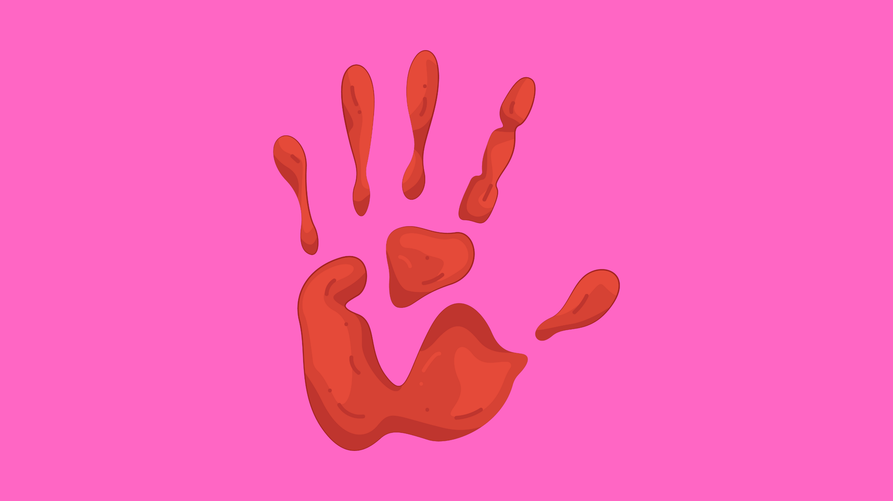

07|2025
A community-based nutrition program designed to improve the health of children under five in rural areas. The initiative integrates nutritional screening, treatment of malnutrition, and educational outreach for caregivers. Field teams conduct home visits and monitor growth metrics, while workshops teach families how to prepare nutrient-rich meals with locally available ingredients. Data collected from screenings is used to refine interventions and track program impact over time.

A nationwide vaccination program designed to increase immunization coverage among high-risk children. The initiative integrated Monitoring, Evaluation, Accountability, and Learning (MEAL) systems to track vaccine delivery and identify gaps in coverage. Field teams conducted household surveys and follow-ups, ensuring 3,000+ children were vaccinated, achieving 98% coverage and a 30% increase in uptake in targeted regions. Biometric attendance systems were piloted for staff to maintain accurate deployment records and ensure operational transparency.

A community-focused maternal and child health initiative aimed at improving access to skilled deliveries, prenatal care, and child health services in underserved rural communities. The program integrates home-based monitoring, health education workshops for mothers and caregivers, and coordinated referrals to local clinics for high-risk pregnancies. Visual tools and educational materials support community engagement, while data collection and follow-up visits track maternal and child health outcomes to continuously refine interventions.
A mentorship and capacity-building program designed to enhance research skills for students and early-career professionals across diverse disciplines. The initiative provides structured guidance on research design, data collection, and statistical analysis using tools like SPSS and Excel. Peer-learning workshops and training sessions develop competencies in academic writing, data interpretation, and effective presentation techniques. Participants apply these skills to complete high-quality research projects, improving methodological rigor and overall project outcomes.

A multi-component humanitarian program aimed at supporting asylum seekers, refugees, and vulnerable communities in Kenya. The initiative integrates medical screenings and referral services for displaced populations, structured meal distributions to address food insecurity, and community sanitation activities to improve public health. Additionally, the program raises awareness of gender-based violence (GBV) through targeted outreach, workshops, and volunteer-led campaigns. Blood donation drives are coordinated to enhance local emergency preparedness, while volunteer engagement ensures sustainable program delivery and community participation.

A community-based initiative designed to strengthen family support systems for Orphans and single-parent families. The program combines literacy sessions, emotional resilience workshops, and caregiver capacity-building activities. Through structured mentoring, participants develop reading skills, coping strategies, and practical caregiving techniques. The program promotes holistic wellbeing and empowers families to create supportive home environments.

A hospital-led initiative designed to extend preventive and primary healthcare services into surrounding communities. The program integrates coordinated outreach activities, health education sessions, and follow-up visits to ensure timely care for residents. Strengthened referral pathways connect community members with hospital services, improving access to treatment and continuity of care. Collaboration with healthcare providers and community health workers supports sustainable delivery and local engagement.